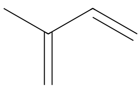

平成29年度 問15 高分子化学
次の記述の、【 】に入る語句の組合せとして、最も適切なものはどれか。
ゴムノキの樹皮を傷つけると【 A 】と呼ばれる白い粘性の樹液がしみ出してくる。これにギ酸や酢酸を加えると【 B 】し、沈殿させたものが生ゴム（天然ゴム）である。生ゴムの主成分はポリイソプレンであるが、弾性に乏しく実用にならない。そこで生ゴムをローラーでよく【 C 】した後、硫黄を5～8%加え140℃に加熱するとゴムは大きな弾性を示し機械的強度も向上する。これを【 D 】という。また、生ゴムを乾留（空気を遮断して加熱）すると分解してイソプレンが生成する。イソプレンにn－ブチルリチウムを加えてヘプタン中でアニオン重合すると【 E 】が主体のポリイソプレンが得られる。これを【 D 】すると弾性のあるゴムが得られる。
| 選択肢 | A | B | C | D | E | |
|---|---|---|---|---|---|---|
|
①
|
ラテックス | 塩析 | 素練り | 加硫 | 1, 2－構造 | |
|
②
|
ラッカー | 凝析 | 混練り | ゲル化 | 1, 2－構造 | |
|
③
|
ラテックス | 塩析 | 素練り | 加硫 | 1, 4－構造 | |
|
④
|
ラッカー | 凝析 | 混練り | 架橋 | 1, 4－構造 | |
|
⑤
|
ラテックス | 塩析 | 素練り | ゲル化 | 1, 4－構造 | |
正答
③ A：ラテックス、B：塩析、C：素練り、D：加硫、E：1, 4－構造
イソプレン同士が加硫により架橋構造を形成することで生ゴムに弾性と強度を与えられます。

Bの凝析は、水との親和性の低い疎水コロイドへ少量の電解質（ギ酸や酢酸）を加えることで沈殿を生じる現象です。親水コロイドへ多量の電解質を加えて沈殿を生じる場合は塩析と呼びます。
Cの練りについて、素練りはポリマー単体を混錬機で練りこみます。対して混練りはポリマーと配合剤（補強剤や可塑剤など）を合わせて練りこみます。素練りはポリマーにせん断力を加えることで混練りのために柔らかくすることが目的です。